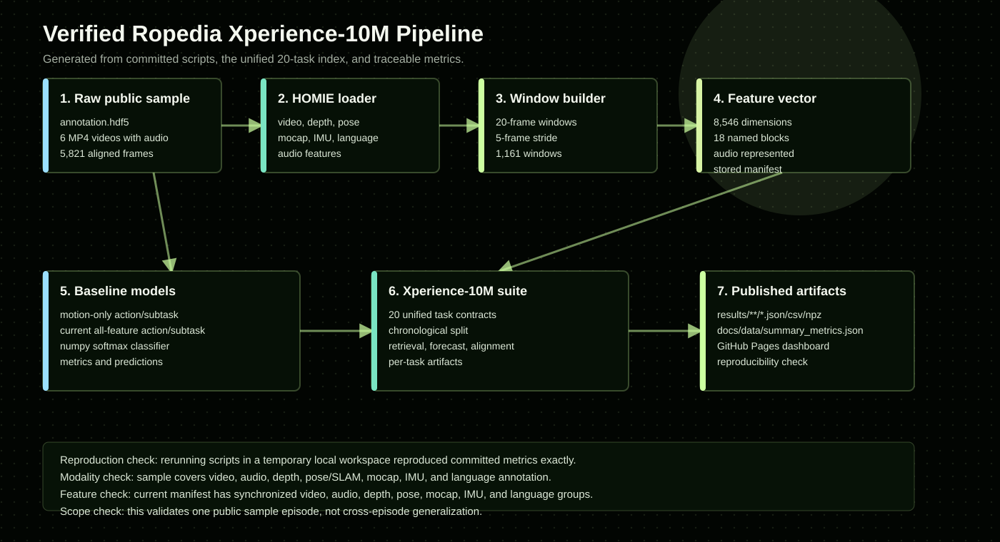
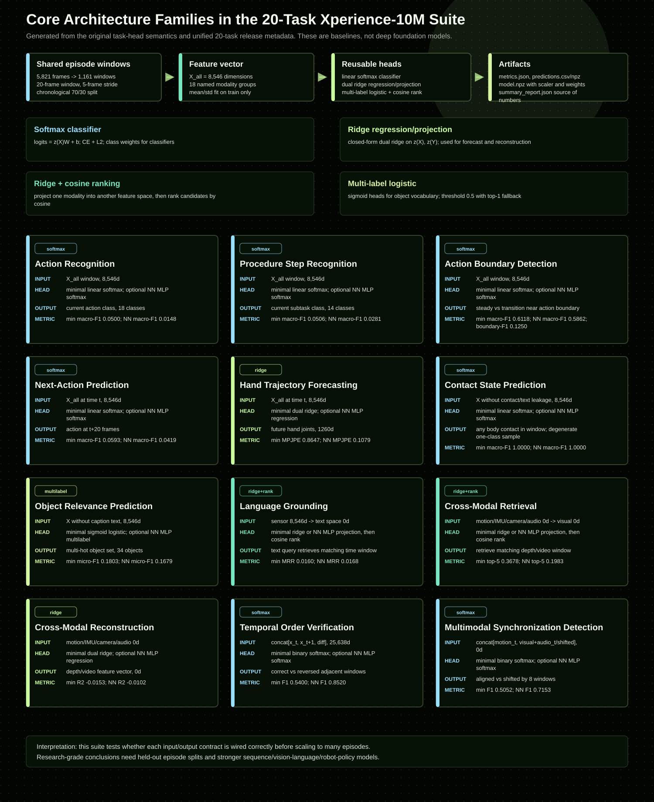
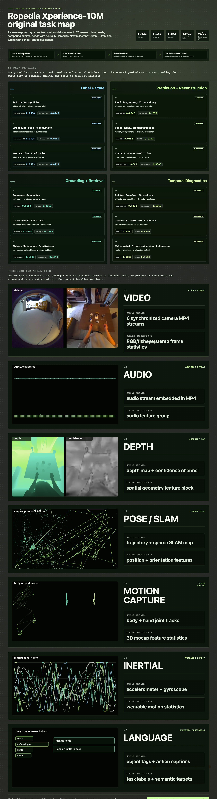

Pipeline from raw episode to task suite.
Every script works from the same data contract: aligned multimodal windows, explicit labels, cached feature extraction, and artifact-first evaluation.

What this project proves
It proves the full engineering loop: reading Ropedia sample data, aligning modalities, converting them into model-ready windows, defining meaningful tasks, producing metrics, and packaging every artifact for review.
What it does not prove
It does not claim general embodied intelligence. A single episode cannot support cross-environment generalization; that requires many episodes and held-out episode splits.
Baselines with transparent artifacts.
Motion-only and all-modality classifiers use the same lightweight softmax model so the comparison stays readable on a laptop.
All-modality action
0.9791Motion-only subtask
0.9528All-modality subtask
0.9308
The 12 tasks use three minimal head families.
The diagram separates the shared episode-window feature pipeline from the task-specific heads: linear softmax, ridge projection/regression, and multi-label logistic regression.

Single-episode tasks, deliberately scoped.
These tasks turn one episode into a lab for temporal structure, modality alignment, retrieval, reconstruction, and action understanding.

timeline_actionsupervised
All modalities to current action label. Chronological split exposes unseen future actions.
macro-F10.0500
timeline_subtasksupervised
All modalities to current subtask label. Useful for segmentation diagnostics.
macro-F10.0495
transition_detectiondiagnostic
Predict steady vs action boundary. Highlights task-transition localization quality.
macro-F10.6552
next_actionsupervised
Current multimodal window to action 20 frames later. Tests short-horizon task flow.
macro-F10.0593
hand_trajectory_forecastforecast
Predict future left/right hand 3D joints. Closer to imitation-learning style signals.
MPJPE0.8223
contact_predictionsupervised
Non-contact modalities to binary contact. Degenerate in this sample because one class dominates.
accuracy1.0000
object_relevancesupervised
Predict relevant object set from non-caption modalities.
micro-F10.1839
caption_groundingretrieval
Caption objects/interaction query to matching sensor window.
MRR0.0172
cross_modal_retrievalretrieval
Motion/IMU/camera query retrieves matching depth/video window. Strongest single-episode signal.
top-50.3764
modality_reconstructionforecast
Motion/IMU/camera to depth/video feature vector.
R2-0.0160
temporal_orderdiagnostic
Two adjacent windows to correct vs reversed order.
F10.5487
misalignment_detectiondiagnostic
Motion+visual pair to aligned vs shifted by eight windows.
F10.4866
All-modality features are inspectable.
The point is not hidden complexity. Every block has a clear source modality and an explicit dimensional footprint.

Diagnostics separate easy wins from real gaps.
The charts make the main lesson visible: within-episode supervised labels are easy under some splits, while retrieval, grounding, forecasting, and alignment remain the useful probes.


Everything important is checked in.
Metrics, predictions, confusion matrices, feature manifests, model weights, and derived window artifacts are committed so the repo is reviewable without rerunning first.
Task-suite report
One JSON file with every task metric and split detail.
summary_report.jsonFeature manifest
Start/end index and dimension for every all-modality feature block.
feature_manifest.jsonCross-modal retrieval
The strongest self-supervised signal from the single episode.
metrics.jsonAll-modality action model
Classifier metrics, predictions, confusion matrix, and model weights.
metrics.jsonWindows table
Window start/end frames and aligned action/subtask labels.
windows.csvReproduction scripts
Three training scripts plus the dashboard generator.
scripts/Reproduce the suite.
Raw Ropedia data is not redistributed here. Download the public sample separately, then run the same scripts.
git clone https://github.com/Ropedia/HOMIE-toolkit.git
python3.12 -m venv .venv
source .venv/bin/activate
pip install -r HOMIE-toolkit/requirements.txt huggingface_hub hf_xet
hf download ropedia-ai/xperience-10m-sample \
--repo-type dataset \
--local-dir data/sample/xperience-10m-sample
git clone https://github.com/ChaoYue0307/ropedia-episode-task-suite.git
cd ropedia-episode-task-suite
python scripts/episode_task_suite.py --workspace /path/to/workspace